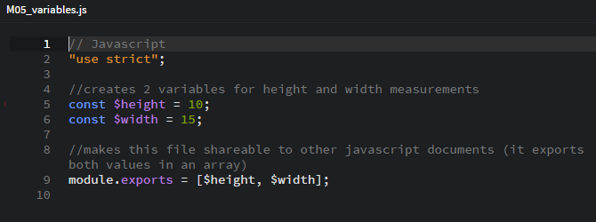
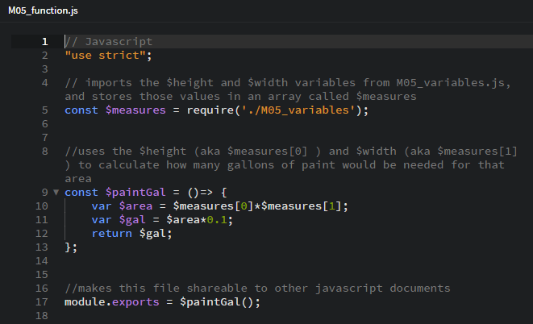
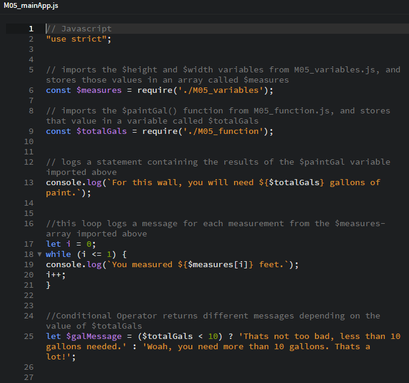
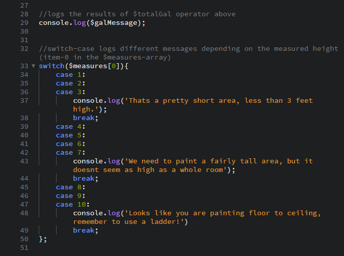
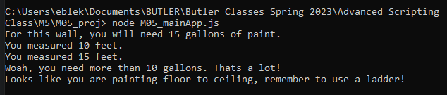

Scripting Project with Node.js
As mentioned in the M5 exercise, Node.js is a JavaScript runtime environment that can run scripts or other applications outside of a browser. It's a useful way to test script/code without creating a full webpage to run them. Users can simply use the Command Prompt window to select the directory which contains the desired script. By typing "node " followed by the file-name of the script, the code runs and any results are displayed in the Command Prompt window.
We'll take a look at a quick project using Node.js below. This project is a set of 3 linked scripts that that start with 2 pieces of data, a height and width measurement (in feet). The scripts then calculate how much paint would be needed to cover that area, and generate a vew variable statements based on the measurements/calculations.
In a more practical application, the height and width could be gathered from user input. However, for the purpose of testing the scripts and their calculations, I simply declared the height/width as variables. Much of the code is explained in comments within the Javascript documents, but I am including brief descriptions on this page too.
M05_variables.js
In M05_variables.js (the first script pictured above), $height and $width are set to numeric values. We also use module.exports to make the data shareable to other files.
M05_function.js
M05_function.js uses the height and width measurements (imported from M05_variables.js) to calculate how many gallons of paint would be needed to paint an area with those dimensions. Again, we use module.exports to make this new data shareable to other files.
M05_mainApp.js
(This script is broken into two images.)
In the final script, we import the measurements from M05_variables.js and the number of gallons calculated from M05_function.js. First, we use console.log to generate a statement quoting how many gallons were calculated in M05_function.js. Next, we use a while-loop with console.log to generate statements quoting each of the measurements from M05_variables.js. Next, we use a conditional (ternary) operator to evaluate how many gallons are needed. If the condition in the parenthesis (less than 10 gallons of paint) is true, the value before the colon is returned. If the condition is false, it returns the value after the colon.
(continued in the second image below)
Next, we use console.log to display the results of the ternary operator from the first image. Lastly, we use a Switch Statement to console.log different values based on the measured height from M05_variables.js. For the sake of simplicity, we made the cases a series of whole numbers to compare with our measurement. Many of the cases fall-through to the one below, so that each value covers a range of measurements.
Below, we see the result of running M05_mainApp.js in the command prompt window.

As we can see, the aforementioned messages are displaying about the measurements and the gallons of paint needed. While the numerical values (height, width, and gallons) were calculated from the first two scripts, we only had to run our final script since it imports the first two.